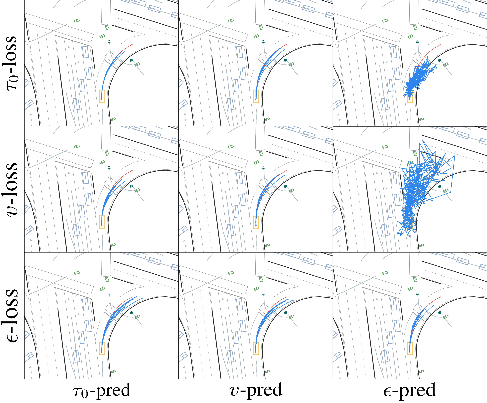
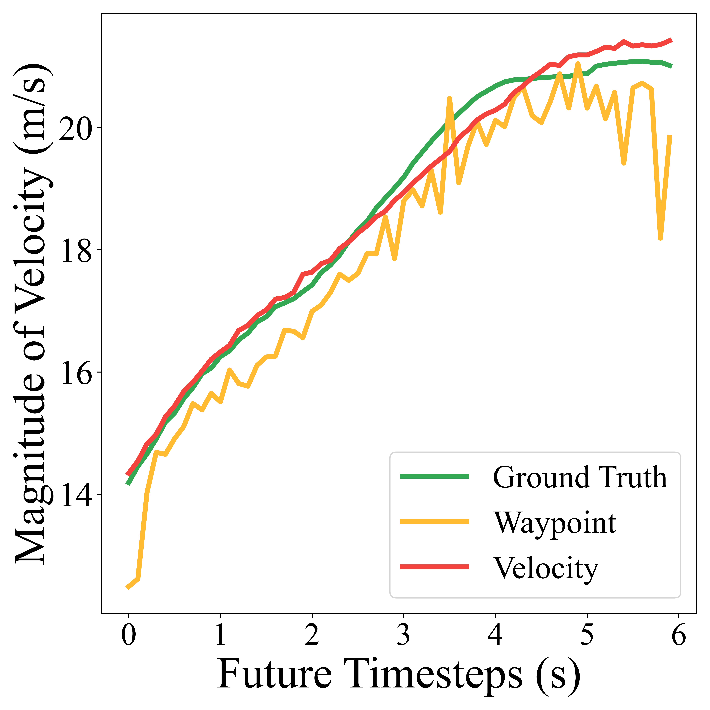
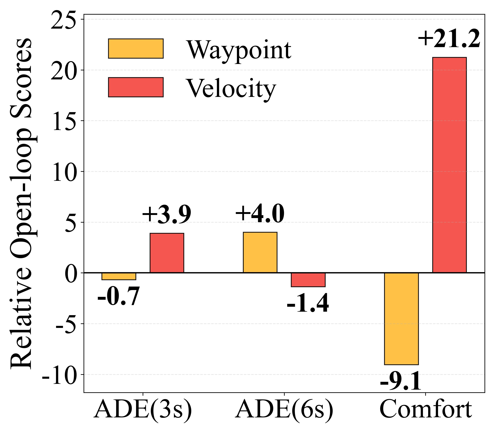
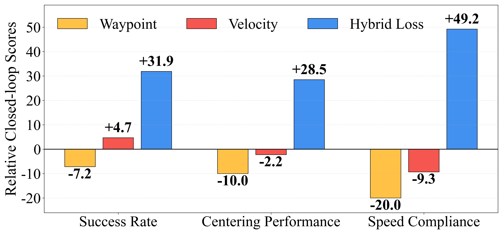
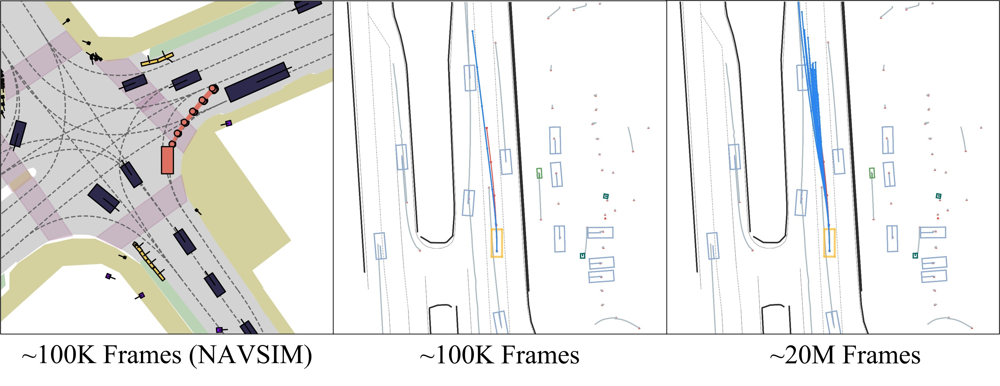
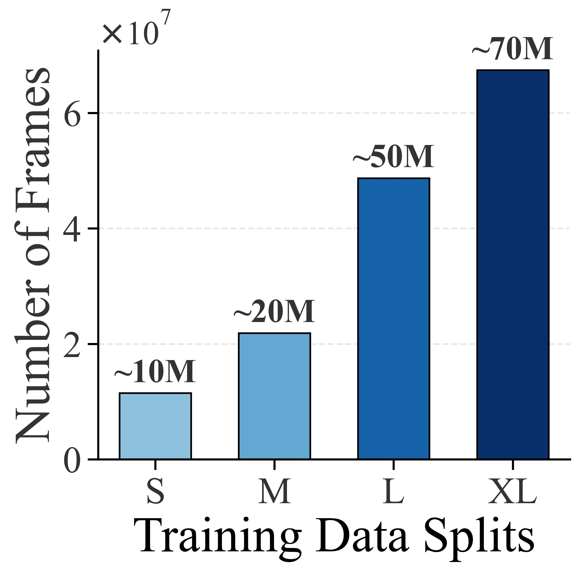
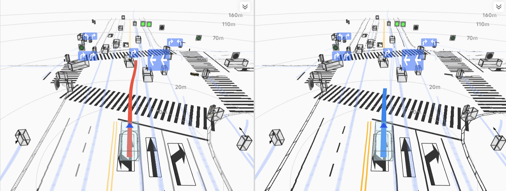
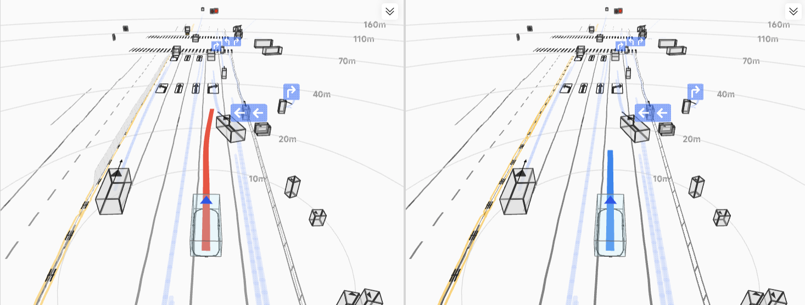

Real-world urban driving — model output with only minimal smoothness post-refinement.
Diffusion models have become a popular choice for decision-making tasks in robotics, and more recently, are also being considered for solving autonomous driving tasks. However, their applications and evaluations in autonomous driving remain limited to simulation-based or laboratory settings. The full strength of diffusion models for large-scale, complex real-world settings, such as End-to-End Autonomous Driving (E2E AD), remains underexplored. In this study, we conducted a systematic and large-scale investigation to unleash the potential of the diffusion models as planners for E2E AD, based on a tremendous amount of real-vehicle data and road testing. Through comprehensive and carefully controlled studies, we identify key insights into the diffusion loss space, trajectory representation, and data scaling that significantly impact E2E planning performance. Moreover, we also provide an effective reinforcement learning post-training strategy to further enhance the safety of the learned planner. The resulting diffusion-based learning framework, Hyper Diffusion Planner (HDP), is deployed on a real-vehicle platform and evaluated across 6 urban driving scenarios and 200 km of real-world testing, achieving a notable 10x performance improvement over the base model. Our work demonstrates that diffusion models, when properly designed and trained, can serve as effective and scalable E2E AD planners for complex, real-world autonomous driving tasks.
Real-world urban driving — model output with only minimal smoothness post-refinement.
We systematically study four key design axes to unleash the full potential of diffusion-based planning for real-world autonomous driving.
Diffusion models are typically trained to predict one of three quantities: the clean data τ0, the noise ε, or the flow velocity v. These targets are mathematically inter-convertible, yet they induce very different learning dynamics. Since existing configurations are inherited from image generation—a domain fundamentally different from planning—we revisit the choice by evaluating all 9 prediction–loss combinations on our planning task.
Why? The trajectory τ0 lives on a low-dimensional manifold that the network can fit directly, while ε and v targets occupy much higher-dimensional spaces that demand greater capacity and exhibit training instability. In particular, τ0-prediction demonstrates superior stability during the final low-noise denoising steps, effectively suppressing high-frequency artifacts to yield kinematically coherent trajectories. Getting this "training coordinate system" right is the prerequisite for all subsequent improvements.

The learning curve of models trained with different loss designs.

The open-loop visualization of planning trajectories.
With τ0-prediction established, a problem emerges when inspecting higher-order statistics: waypoint trajectories capture global geometry well but produce jerky velocity profiles, while velocity trajectories are kinematically smooth yet sacrifice geometric accuracy. Choosing only one forces an undesirable trade-off.
Theoretical guarantee: We prove that the Hybrid Loss is equivalent to a score-matching loss under a positive-definite weighted P-norm, ensuring the learned score function remains unbiased.
Real-vehicle performance: In closed-loop tests, the Hybrid Loss substantially improves both success rate and comfort over single-representation baselines—the critical step from "it drives" to "it drives well."


Left: v–t curves—waypoints jitter, velocity is smooth. Right: Metric comparison.

Closed-loop results: Hybrid Loss outperforms both single-representation baselines across all metrics.
Diffusion models are renowned for multimodal generation, yet existing AD benchmarks (e.g., NAVSIM with only ~100K frames) are far too small to exhibit this capability, leading to severe mode collapse. To investigate, we conduct controlled experiments scaling real-vehicle data from 100K to 70M frames—orders of magnitude beyond typical academic settings.
This validates that a clean diffusion planning architecture, free of anchors or goal conditioning, can effectively exploit industrial-scale data—consistent with the theoretical result that diffusion models need sufficient training data for generalization.


Left: Trajectory divergence vs. data size—multimodality emerges with scale. Right: All trajectories collapse at 100K; diverse modes at 20M.


Left: Training data splits (S / M / L / XL). Right: Both open- and closed-loop performance scale steadily with data.
Imitation learning produces a strong behavioral prior but provides no explicit safety constraint—a critical gap for deployment. We close it with an RL post-training stage that directly optimizes a safety-aware reward while keeping the entire diffusion architecture intact.
We formulate a KL-regularized policy optimization objective that constrains the updated policy to stay close to the referece policy. Its closed-form solution is an elegant reward-reweighting: the existing Hybrid Loss is simply multiplied by exp(β·r), where r is a collision-based safety reward.
The resulting HDP-RL shows significant improvements in safety-critical scenarios (yielding at intersections, VRU avoidance) while preserving overall driving stability—completing the progression from "it drives" to "it drives safely."

Safety-related success rate improvement after RL post-training.


Trajectory comparison—red HDP vs. blue HDP-RL (RL steers away from collision).
@article{zheng2026unleash,
title = {Unleashing the Potential of Diffusion Models for End-to-End Autonomous Driving},
author = {Yinan Zheng and Tianyi Tan and Bin Huang and Enguang Liu and Ruiming Liang
and Jianlin Zhang and Jianwei Cui and Guang Chen and Kun Ma and Hangjun Ye
and Long Chen and Ya-Qin Zhang and Xianyuan Zhan and Jingjing Liu},
journal = {arXiv preprint arXiv:2602.22801},
year = {2026}
}